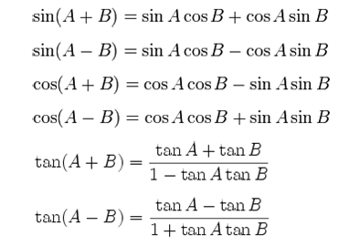
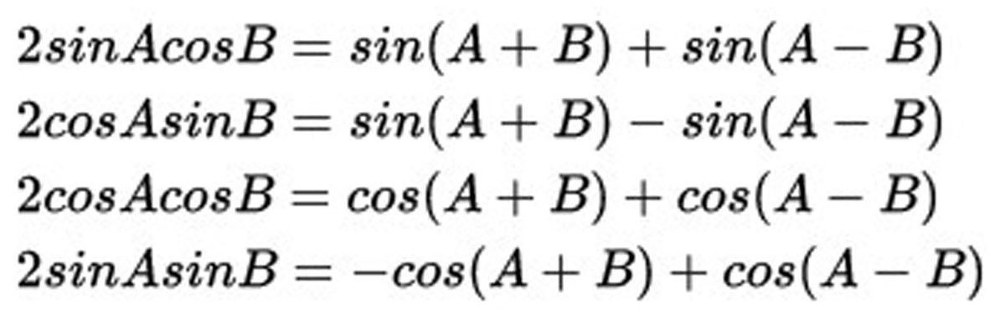
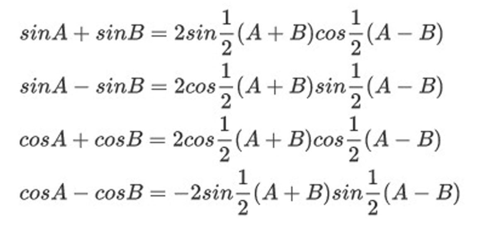
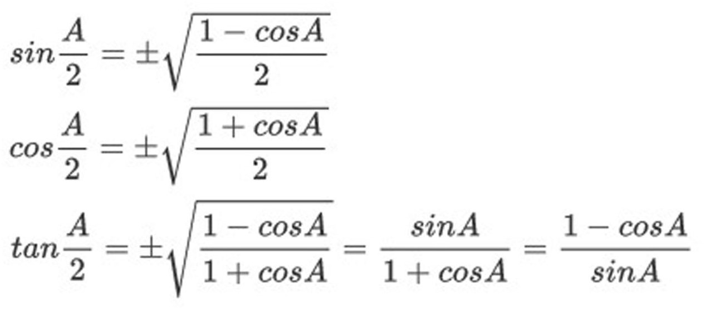

E. Rumus-Rumus Trigonometri
- Identitas Trigonometri
- Hubungan Teorema Phytagoras
- sin2 α + cos2 α = 1
- 1 + tan2 α = sec2 α
- 1 + cot2 α = cosec2 α
- Hubungan Perbandingan
-
tan α =
sin α
/
cos α
-
cot α =
cos α
/
sin α
- c. Sudut Rangkap
-
sin 2α = 2 sin α cos α
-
cos 2α = cos2 α - sin2 α = 1 - 2 sin2 α = 2 cos2 α - 1
-
tan 2α =
2 tan α
/
1 - tan2 α
-
cot 2α =
cot2 α - 1
/
2 cot α
-
sin 3α = 3 sinα - 4 sin3 α
-
cos 3α = 4 cos3 α - 3 cos α
- Jumlah dan Selisih Dua Sudut

- Perkalian Trigonometri

- Jumlah dan Selisih Trigonometri

- Setengah Sudut
